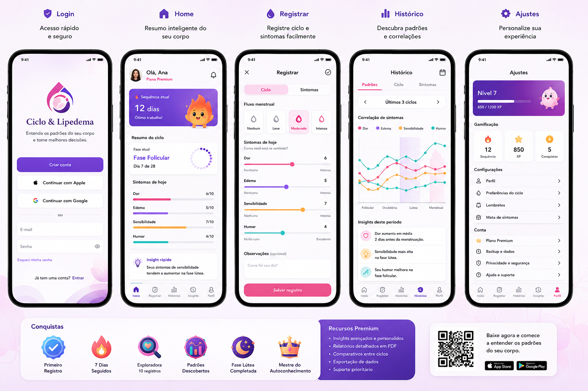

Dor, edema, sensibilidade e humor
Registre todos os dias e veja gráficos reais de evolução, não uma sensação vaga.
 Radar Lipedema
Criar conta
Radar Lipedema
Criar conta
Registre sintomas, ciclo, tratamentos e evolução em um só lugar — e leve dados reais para sua consulta médica, não só a sensação de "acho que piorou".
Criar minha conta
Dor que muda de um dia pro outro, inchaço que parece piorar antes da menstruação, tratamentos que você faz mas não sabe se estão fazendo diferença de verdade. Sem registro, tudo vira lembrança vaga — inclusive na hora de contar pro seu médico.
Registre todos os dias e veja gráficos reais de evolução, não uma sensação vaga.
Veja como fase folicular, ovulação e TPM se relacionam com seus sintomas ao longo do tempo.
Acompanhe drenagem, fisioterapia, exercício e horas reais de uso da meia — e receba lembrete de quando trocar.
Coxas, panturrilhas e tornozelos separadamente — porque lipedema não afeta o corpo todo por igual.
Registre fotos por ângulo e compare com o tempo, sem precisar procurar no rolo da câmera.
Leve para a consulta a adesão real ao tratamento conservador e a evolução dos seus sintomas.
Leva menos de um minuto. Só e-mail e senha.
Sintomas, tratamentos, ciclo, peso — no seu ritmo, sem burocracia.
O app cruza seus próprios dados e mostra o que está mudando — pra você e pra quem te acompanha na saúde.
O Radar Lipedema está em fase de lançamento: preferimos ser honestos sobre isso a inventar números ou depoimentos que não existem ainda. O que existe de verdade: seus registros ficam salvos com segurança, você pode exportar seus dados a qualquer momento e apagar sua conta e tudo relacionado a ela quando quiser, direto pelo app.